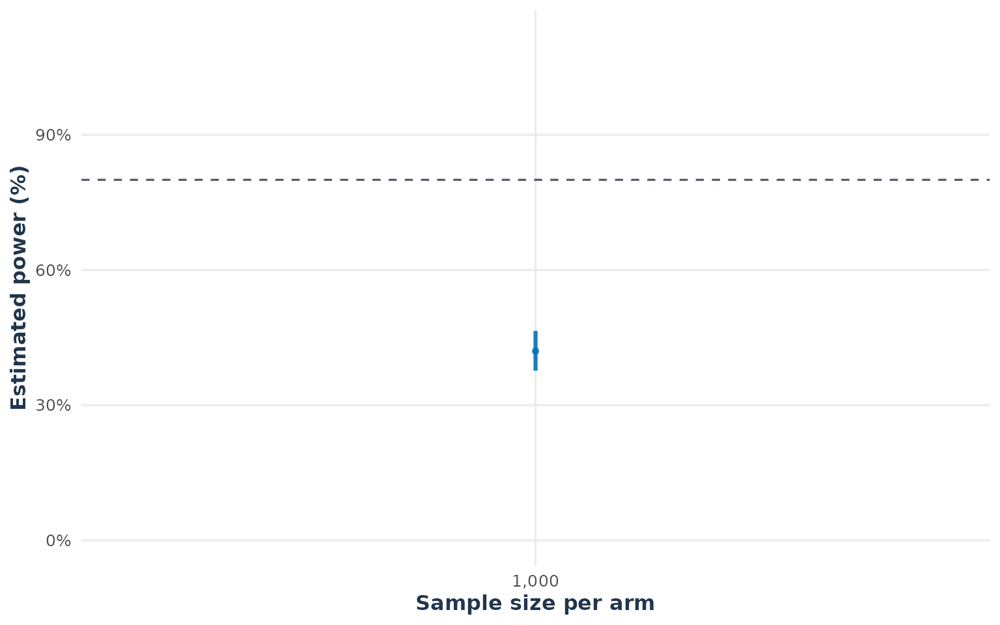

Count Outcomes
count.RmdOverview
This vignette illustrates the unified sampleSize() and
simPower() interface for count outcomes. The
distribution argument selects either a Poisson or a
negative-binomial model, while dtype selects a parallel or
2x2 crossover design. The estimand is the event-rate ratio
where and are the event rates in the test and reference groups. Equivalence is assessed with a two-one-sided test on the log-rate-ratio scale. The examples use equal exposure per participant and simulation-based power calculations.
The recommended workflow is to separate three questions. First, are the user-specified rates, exposures, and dispersion values represented correctly in the simulated data? Second, do the simulated endpoint correlations reproduce the dependence assumption? Third, what power and sample size follow from that data-generating model? The first two questions are addressed with the distribution diagnostics below; they are model checks, not additional equivalence tests.
Parallel design: Poisson outcomes
The following example uses event rates of 0.21 and 0.20 per
participant for the test and reference groups, respectively.
simPower() evaluates the achieved power at a fixed sample
size, while sampleSize() searches for the smallest sample
size per arm that reaches the target power.
parallel_power <- simPower(
n = 1000,
distribution = "pois",
rate_list = list(TEST = 0.21, REF = 0.20),
list_comparator = list(TEST_vs_REF = c("TEST", "REF")),
list_lequi.tol = list(TEST_vs_REF = 0.80),
list_uequi.tol = list(TEST_vs_REF = 1.25),
exposure = 1,
dtype = "parallel",
nsim = 500,
seed = 1234,
keep_sim_data = TRUE
)
parallel_power
#> Fixed-sample-size power
#> Distribution: pois
#> Sample size: 1000
#> Power: 0.4200 [0.3765, 0.4647]
confint(parallel_power)
#> n n_total power Lower Upper
#> 1 1000 2000 0.42 0.3763231 0.4646284
parallel_sample_size <- sampleSize(
power = 0.80,
distribution = "pois",
rate_list = list(TEST = 0.21, REF = 0.20),
list_comparator = list(TEST_vs_REF = c("TEST", "REF")),
list_lequi.tol = list(TEST_vs_REF = 0.80),
list_uequi.tol = list(TEST_vs_REF = 1.25),
exposure = 1,
dtype = "parallel",
lower = 100,
upper = 2200,
nsim = 500,
seed = 1234
)
parallel_sample_size
#> Count-rate equivalence sample size
#> Subjects per arm: 2006
#> Total subjects: 4012
#> Endpoints: 1 (required: 1 )
#> Alpha adjustment: none
#> Achieved power: 0.8000 [0.7617, 0.8336]
summary(parallel_sample_size)
#> Sample Size Summary
#> ----------------------
#> Design type : parallel
#> Distribution : pois
#> Comparison type : RR
#> Estimand : event-rate ratio (lambda_T / lambda_R)
#> Hypotheses : H0: RR <= L or >= U; H1: L < RR < U
#> Alpha : 0.05
#> Target power : 0.8000
#> Achieved power : 0.8000
#> Power interval : [0.7617, 0.8336]
#> Required endpoints : 1
#> Alpha adjustment : none
#>
#> Equivalence Margins:
#> Comparison Endpoint Lower Upper
#> TEST_vs_REF endpoint_1 0.8 1.25
#>
#> Estimated Sample Size:
#> TEST REF Total
#> 2006 2006 4012The returned sample size is reported per arm and as a total for the
two-arm parallel trial. Simulation error can be reduced by increasing
nsim.
Updating a count calculation
Results retain the arguments used to create them, so a new scenario
can be evaluated with update() rather than repeating the
full call. For example, the following changes only the fixed sample size
and simulation precision for the power calculation, and only the target
power for the sample-size search:
parallel_power_larger <- update(parallel_power, n = 1500, nsim = 1000)
parallel_sample_size_90 <- update(parallel_sample_size, power = 0.90,upper = 5000)
parallel_power_larger
#> Fixed-sample-size power
#> Distribution: pois
#> Sample size: 1500
#> Power: 0.6580 [0.6275, 0.6872]
summary(parallel_sample_size_90)
#> Sample Size Summary
#> ----------------------
#> Design type : parallel
#> Distribution : pois
#> Comparison type : RR
#> Estimand : event-rate ratio (lambda_T / lambda_R)
#> Hypotheses : H0: RR <= L or >= U; H1: L < RR < U
#> Alpha : 0.05
#> Target power : 0.9000
#> Achieved power : 0.9020
#> Power interval : [0.8717, 0.9260]
#> Required endpoints : 1
#> Alpha adjustment : none
#>
#> Equivalence Margins:
#> Comparison Endpoint Lower Upper
#> TEST_vs_REF endpoint_1 0.8 1.25
#>
#> Estimated Sample Size:
#> TEST REF Total
#> 2563 2563 5126All other rates, margins, design settings, and random-number settings are carried forward from the original result. This is useful for sensitivity analyses, but a changed scientific estimand should still be documented by showing the relevant endpoint or comparator arguments explicitly.
A step-by-step validation workflow
The plots in this vignette answer different validation questions. They should be read in the following order:
- Result and precision: check the estimated power, its Monte Carlo interval, and the total sample size.
- Marginal outcome model: check whether simulated counts follow the specified Poisson or negative-binomial distribution.
- Rate scale: check whether counts divided by exposure are centered on the user-specified event rates.
-
Endpoint dependence: check whether within-trial
correlations are compatible with
cor_mat.
The first four checks validate the data-generating inputs. Only after those checks should the power or sample-size conclusion be interpreted.
Step 1: Check the reported result and Monte Carlo uncertainty
For a fixed sample size, plot() shows the achieved power
and its confidence interval. For a sample-size calculation,
summary() and confint() show the selected
sample size and the achieved power at that design. The confidence
interval measures simulation uncertainty; it does not account for
uncertainty in the user-supplied rates, exposure, or dispersion.
summary(parallel_sample_size)
#> Sample Size Summary
#> ----------------------
#> Design type : parallel
#> Distribution : pois
#> Comparison type : RR
#> Estimand : event-rate ratio (lambda_T / lambda_R)
#> Hypotheses : H0: RR <= L or >= U; H1: L < RR < U
#> Alpha : 0.05
#> Target power : 0.8000
#> Achieved power : 0.8000
#> Power interval : [0.7617, 0.8336]
#> Required endpoints : 1
#> Alpha adjustment : none
#>
#> Equivalence Margins:
#> Comparison Endpoint Lower Upper
#> TEST_vs_REF endpoint_1 0.8 1.25
#>
#> Estimated Sample Size:
#> TEST REF Total
#> 2006 2006 4012
confint(parallel_sample_size)
#> Lower Upper
#> 0.7622082 0.8341999
#> attr(,"conf.level")
#> [1] 0.95
summary(parallel_power)
#> distribution model ctype estimand
#> 1 pois poisson RR event-rate ratio
#> hypothesis design n_per_arm n_total power
#> 1 H0: RR <= L or RR >= U; H1: L < RR < U parallel 1000 2000 0.42
#> power_LCI power_UCI nsim
#> 1 0.3765311 0.4647169 500
confint(parallel_power)
#> n n_total power Lower Upper
#> 1 1000 2000 0.42 0.3763231 0.4646284
plot(parallel_power)
Focus on the achieved power and its interval for the fixed-size
result. For the sample-size result, confirm the selected subjects per
arm, the resulting total sample size, and whether achieved power reaches
the target. If the interval is too wide for the planned decision,
increase nsim; do not treat a Monte Carlo fluctuation as
evidence that the clinical assumptions are wrong.
Step 2: Check the marginal count distribution
Raw observations are not retained by default. Set
keep_sim_data = TRUE when the purpose of the run includes
checking the data-generating mechanism. The following two-endpoint
example supplies a latent endpoint correlation of 0.5. The same
parameter can be supplied for a negative-binomial simulation by changing
distribution.
count_corr <- matrix(c(1, 0.5, 0.5, 1), nrow = 2,
dimnames = list(c("y1", "y2"), c("y1", "y2")))
poisson_diagnostic <- simPower(
n = 500,
distribution = "pois",
rate_list = list(TEST = c(y1 = 0.21, y2 = 0.24),
REF = c(y1 = 0.20, y2 = 0.22)),
list_comparator = list(TEST_vs_REF = c("TEST", "REF")),
list_lequi.tol = list(TEST_vs_REF = c(y1 = 0.80, y2 = 0.80)),
list_uequi.tol = list(TEST_vs_REF = c(y1 = 1.25, y2 = 1.25)),
exposure = 1,
cor_mat = count_corr,
dtype = "parallel",
nsim = 500,
seed = 1234,
keep_sim_data = TRUE
)plot_distribution() with
estimand = "outcome" shows the distribution of the
individual simulated event counts. For count outcomes, the dashed orange
curve is the specified Poisson or negative-binomial distribution. This
checks the outcome scale, but it is not the most direct check of the
rate parameter because the rate also depends on exposure.
plot_distribution(poisson_diagnostic, estimand = "outcome", type = "histogram",
arms = c("TEST", "REF"))
Focus first on the shape and scale of the blue empirical bars. They should be compatible with the dashed orange Poisson reference. For a negative-binomial analysis, the same comparison should show the extra variation implied by the specified dispersion.
Step 3: Check the exposure-adjusted rate scale
For the parameter-scale check, use estimand = "rate".
The function first combines counts and exposure within each simulated
trial and arm, then plots the resulting exposure-adjusted rate. The
dashed line is the rate supplied in rate_list; therefore,
the plot directly answers whether the simulated trial rates are centered
on the intended values.
plot_distribution(poisson_diagnostic, estimand = "rate", type = "density",
arms = c("TEST", "REF"))
Focus on whether the empirical rate distribution is centered near the dashed line for each arm and endpoint. If it is systematically shifted, check the rate, exposure, arm names, and endpoint names before interpreting power. This plot is more informative than a raw count plot when exposure differs between participants or arms.
Step 4: Check endpoint dependence
Finally, plot_distribution(estimand = "correlation")
calculates a correlation between endpoints within each simulated trial
and arm. The blue distribution shows the sampling variation of those
empirical correlations; the dashed orange line is the latent correlation
supplied through cor_mat. For discrete outcomes, the
observed Pearson correlation need not equal the latent correlation
exactly, because rates, exposure, overdispersion, and discreteness all
affect it.
plot_distribution(poisson_diagnostic, estimand = "correlation",
arms = c("TEST", "REF"))
Focus on whether the empirical correlations fluctuate around the
dashed reference value. For count outcomes, the dashed line represents
the latent correlation supplied through cor_mat; the
observed Pearson correlation can differ because of discreteness,
exposure, event rates, and dispersion.
These diagnostics should be inspected before interpreting power. A mismatch between the empirical rate or correlation distributions and their reference values usually indicates that the input structure, exposure specification, or simulation assumptions need review.
After these four checks, repeat the workflow for the negative-binomial and 2x2 crossover scenarios if they are plausible alternatives for the study. A model that gives the desired power but fails one of these input checks should be corrected before changing the sample size or equivalence margins.
Published two-arm Poisson benchmark
As a simple external check, Zhu (Zhu 2017) reports a two-arm
Poisson equivalence calculation with equal event rates of 1 per time
unit, average exposure of 0.7, equivalence limits of 0.9 and
,
one-sided \(\alpha=0.025\), and 2,705 participants per arm. The reported
total sample size is therefore 5,410, with approximated power 0.80012.
The following uses the unified simPower() interface for the
same treatment-versus-control scenario.
zhu_benchmark <- simPower(
n = 2705,
distribution = "pois",
rate_list = list(TEST = 1, REF = 1),
list_comparator = list(TEST_vs_REF = c("TEST", "REF")),
list_lequi.tol = list(TEST_vs_REF = 0.9),
list_uequi.tol = list(TEST_vs_REF = 1 / 0.9),
exposure = 0.7,
dtype = "parallel",
alpha = 0.025,
nsim = 5000,
seed = 2024
)
zhu_benchmark
#> Fixed-sample-size power
#> Distribution: pois
#> Sample size: 2705
#> Power: 0.7936 [0.7821, 0.8047]
data.frame(
reference_power = 0.80012,
simulated_power = zhu_benchmark$power,
simulated_lower = zhu_benchmark$power_LCI,
simulated_upper = zhu_benchmark$power_UCI
)
#> reference_power simulated_power simulated_lower simulated_upper
#> 1 0.80012 0.7936 0.7820566 0.8046886The simulation should be close to the published approximation, but it
is not expected to reproduce it exactly. Zhu’s value is based on a
large-sample calculation, whereas simPower() simulates
discrete Poisson event totals and uses the package’s finite-sample
equivalence procedure. In addition, the Monte Carlo estimate varies
slightly with nsim and the random seed. The benchmark is
intended as a plausibility check for the simple two-arm case; the
three-arm, multi-endpoint examples below address a different, joint
multiple-comparison problem.
Exposure and negative-binomial dispersion can also vary by arm. Each
list must use the same arm names as rate_list; values may
be scalar or endpoint vectors.
simPower(
n = 1000,
distribution = "nbinom",
rate_list = list(TEST = c(endpoint_1 = 0.21),
REF = c(endpoint_1 = 0.20)),
list_comparator = list(TEST_vs_REF = c("TEST", "REF")),
list_lequi.tol = list(TEST_vs_REF = 0.80),
list_uequi.tol = list(TEST_vs_REF = 1.25),
exposure = list(TEST = 1, REF = 2),
dispersion = list(TEST = 0.005, REF = 0.010),
dtype = "parallel", nsim = 1000, seed = 1234
)2x2 crossover design: negative-binomial outcomes
The same unified functions can plan a balanced 2x2 crossover design.
For dtype = "2x2", n in
simPower() and the returned n_per_arm in
sampleSize() refer to the number of participants per
sequence. The negative-binomial example uses arm-specific exposure and
dispersion values; larger dispersion values represent more
overdispersion.
crossover_power <- simPower(
n = 1000,
distribution = "nbinom",
rate_list = list(TEST = 0.21, REF = 0.20),
list_comparator = list(TEST_vs_REF = c("TEST", "REF")),
list_lequi.tol = list(TEST_vs_REF = 0.80),
list_uequi.tol = list(TEST_vs_REF = 1.25),
exposure = list(TEST = 1, REF = 1.2),
dispersion = list(TEST = 0.005, REF = 0.008),
dtype = "2x2",
nsim = 200,
seed = 1234
)
crossover_power
#> Fixed-sample-size power
#> Distribution: nbinom
#> Sample size: 1000
#> Power: 1.0000 [0.9765, 1.0000]
confint(crossover_power)
#> n n_total power Lower Upper
#> 1 1000 2000 1 0.9817247 1
crossover_sample_size <- sampleSize(
power = 0.80,
distribution = "nbinom",
rate_list = list(TEST = 0.21, REF = 0.20),
list_comparator = list(TEST_vs_REF = c("TEST", "REF")),
list_lequi.tol = list(TEST_vs_REF = 0.80),
list_uequi.tol = list(TEST_vs_REF = 1.25),
exposure = list(TEST = 1, REF = 1.2),
dispersion = list(TEST = 0.005, REF = 0.008),
dtype = "2x2",
lower = 300,
upper = 1200,
nsim = 100,
seed = 1234
)
crossover_sample_size
#> Count-rate equivalence sample size
#> Subjects per arm: 300
#> Total subjects: 600
#> Endpoints: 1 (required: 1 )
#> Alpha adjustment: none
#> Achieved power: 0.8800 [0.7960, 0.9337]
summary(crossover_sample_size)
#> Sample Size Summary
#> ----------------------
#> Design type : 2x2
#> Distribution : nbinom
#> Comparison type : RR
#> Estimand : event-rate ratio (lambda_T / lambda_R)
#> Hypotheses : H0: RR <= L or >= U; H1: L < RR < U
#> Alpha : 0.05
#> Target power : 0.8000
#> Achieved power : 0.8800
#> Power interval : [0.7960, 0.9337]
#> Required endpoints : 1
#> Alpha adjustment : none
#>
#> Equivalence Margins:
#> Comparison Endpoint Lower Upper
#> TEST_vs_REF endpoint_1 0.8 1.25
#>
#> Estimated Sample Size:
#> seq0 seq1 Total
#> 300 300 600In the current count crossover implementation, the two sequences are
balanced and each participant contributes one exposure under each
treatment. The kernel can additionally accept sigmaB,
Eper, Eco, and dropout to
represent between-subject variability, period effects, carry-over
effects, and sequence-specific dropout. The paired log-rate analysis and
its assumptions are described in the companion
methodological_assumptions.Rmd vignette.
Interpretation and scope
The count extension is intended for planning studies in which the estimand is an event-rate ratio based on aggregate event counts. Users should select the Poisson or negative-binomial model using prior information about event-rate variability. The simulated power is conditional on the specified rates, exposure, equivalence margins, dispersion, and design assumptions.
For multi-endpoint count simulations, cor_mat is a
latent Gaussian-copula correlation matrix. It describes dependence
between endpoints within the simulation, not the Pearson correlation of
the observed discrete counts and not a correlation between the test and
reference arms. Use diag(m) for latent endpoint
independence. Because the observed correlation also depends on the
rates, exposure, dispersion, and discreteness of the counts,
cor_mat should be justified from prior data or varied in
sensitivity analyses.
The diagnostics above make this distinction visible:
plot_distribution() checks the marginal outcome or rate
distributions, whereas
plot_distribution(estimand = "correlation") checks the
dependence generated between endpoints. Neither plot estimates an
additional treatment effect; the estimand used for the equivalence
decision remains the event-rate ratio